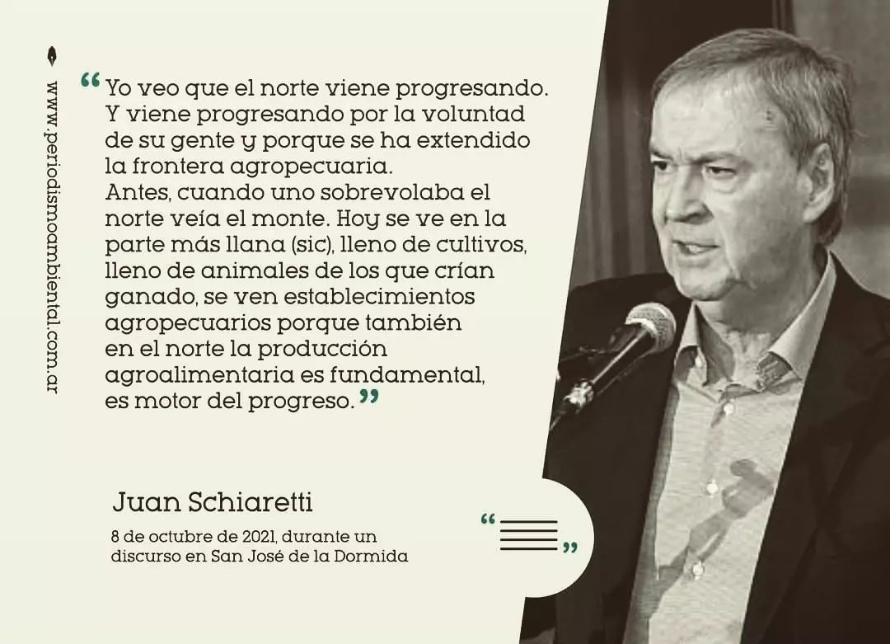

Colectivo Volviendo a la Tierra
Esta será la página de una nueva escuela que está creciendo en las sierras de Córdoba
Elegir la educación Waldorf es saber que ella le enseña a la cabeza, al corazón y a las manos. Es procurar un equilibrio entre la imaginación y la memoria en el aprendizaje. Desarrollar un pensamiento que incluya componentes creativos además de analíticos y un aprendizaje interdisciplinario que integre elementos conceptuales, prácticos y artísticos. La pedagogía waldorf promueve el desarrollo de capacidades propias, la habilidad de pensar clara y analíticamente, el poder de apreciar y experimentar empáticamente los fenómenos del mundo. Nuestro proyecto educativo se orienta al desarrollo integral de la persona con conocimientos acerca del mundo en el que vive, de la historia de la humanidad y de su cultura.
¿Qué implica para la familia formar parte de nuestra escuela?
La familia es la primera responsable por la educación del niño, sus hábitos, ritmos y modales. En segunda instancia, y ya en relación con la institución educativa la familia es corresponsable proactiva del proceso educativo de los niños. Acompaña, y colabora en la construcción de la institución con apertura al diálogo y en búsqueda de la Antroposofía.
Donde hubo fuego, habrá monte
Palabras de Guillermo Folguera
No, los incendios no son un accidente.
Son la forma elegida para extender los negocios.
Por eso los incendios se festejan desde ciertos sectores. Por eso los fomentan. Por eso no hay responsables judicializados.
Por eso no los previenen. Por eso no renuncian.
